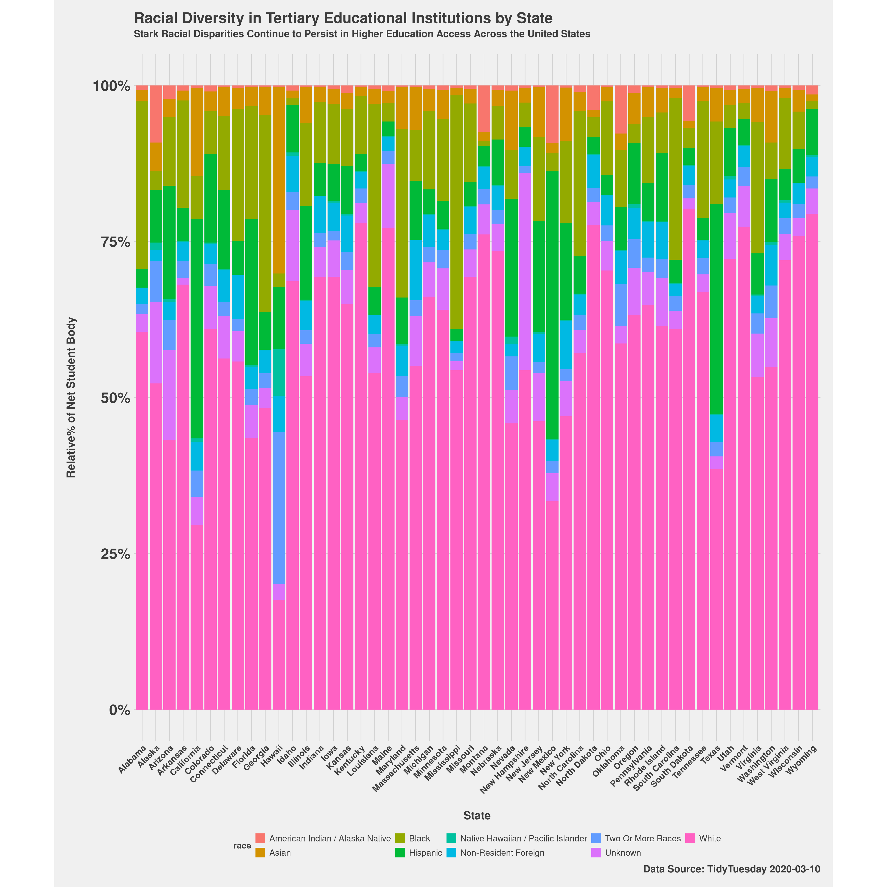
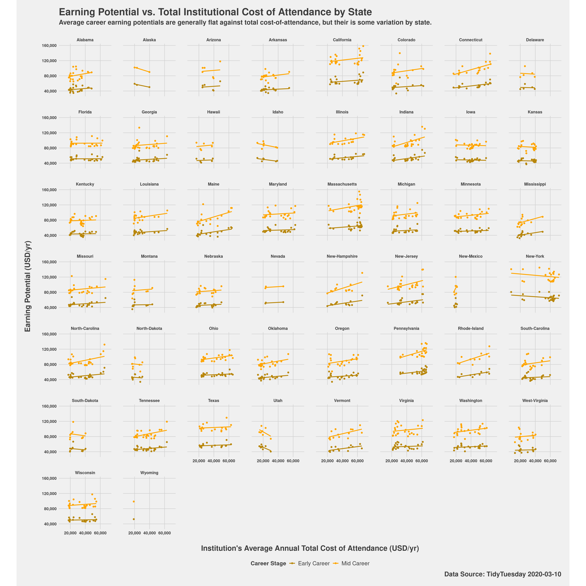
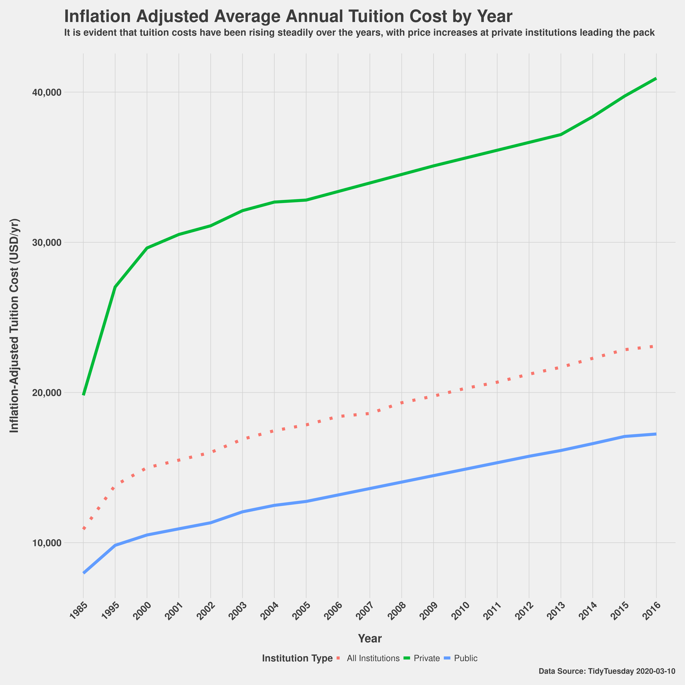

dependencies <- c("here", "readr", "dplyr", "tidyr", "lubridate", "scales",
"ggplot2", "stringr", "tidytext", "ggthemes", "tidytuesdayR")
# Use lapply to apply the library function to each element in the list
invisible(lapply(dependencies, library, character.only = TRUE))
# Adjust plot display size
options(repr.plot.width=20, repr.plot.height=20, units = "cm")Sample Data Analaysis - Picking the Right College
AI-usage Notice
Per the 140.777 course syllabus, AI-usage for this course is permitted when it is properly cited and disclosed. This analysis features two AI-generated images! Both were generated via prompting of Google’s Gemini LLM. The prompt used was:
“In a vaporwave and flat geometric painting style cartoon: can you generate me an image of a greek statue being crushed by debt; I want the image to represent the student loan crisis, with students being crushed by the weight of their loans now more than ever?
I want the statue to essentially represent a student, with cap and tassle on their head, and to be carrying a giant boulder on their back representing their student loan debt as a weight holding them back. statue should be made of marble. The boulder should simply read: “STUDENT LOAN DEBT”
Project 1 - Section 2.3.1: A Sample Data Analaysis
November 2nd, 2024
The question we’re ultimately trying to answer is simple: how do you pick the college that’s right for you while best positioning yourself to avoid student loan debt? To answer this, we’ll embark on a three-factor analysis to investigate trends related to three key sub-questions useful for figuring out what school environment makes the most sense for you, agnostic of what you eventually choose to study. These three sub-questions are:
- Which states have the greatest demographic diversity?
- How do long-term career earnings vary with total cost of school attendance (i.e., input-cost v. long-term reward)?
- How has the (inflation-adjusted) cost of attendance for colleges and universities changed over the years?
Intended Audience
The inclusion of this is a grading requirement.
The intended audience for this analysis is recent high school graduates and military veterans interested in going to university for the first time to complete their undergraduate education.
The data for this analysis was sourced from the TidyTuesday project, originally for their 2020-03-10 podcast episode; the original repository for TidyTuesday 2020-03-10 is available at their github repo: https://github.com/rfordatascience/tidytuesday/tree/master/data/2020/2020-03-10. Per TidyTuesday, the underlying data compiled by TidyTyesday for this project was sourced from several places: [1] Historical Averages: National Center for Education Statistics, [2] Tuition and Fees data: The Chronicle for Higher Education, [3] Diversity Data: The Chronicle for Higher Education, and [4] Average cost-of-attendance by income bracket: tuitiontracker.org.
The data dictionary used for the dataset underlying this analysis is also available from the TidyTuesday github repo for 2020-03-10, and reconstituted here for convenience:
Data Dictionary
tuition_cost.csv
| variable | class | description |
|---|---|---|
| name | character | School name |
| state | character | State name |
| state_code | character | State Abbreviation |
| type | character | Type: Public, private, for-profit |
| degree_length | character | 4 year or 2 year degree |
| room_and_board | double | Room and board in USD |
| in_state_tuition | double | Tuition for in-state residents in USD |
| in_state_total | double | Total cost for in-state residents in USD (sum of room & board + in state tuition) |
| out_of_state_tuition | double | Tuition for out-of-state residents in USD |
| out_of_state_total | double | Total cost for in-state residents in USD (sum of room & board + out of state tuition) |
tuition_income.csv
| variable | class | description |
|---|---|---|
| name | character | School name |
| state | character | State Name |
| total_price | double | Total price in USD |
| year | double | year |
| campus | character | On or off-campus |
| net_cost | double | Net-cost - average actually paid after scholarship/award |
| income_lvl | character | Income bracket |
salary_potential.csv
| variable | class | description |
|---|---|---|
| rank | double | Potential salary rank within state |
| name | character | Name of school |
| state_name | character | state name |
| early_career_pay | double | Estimated early career pay in USD |
| mid_career_pay | double | Estimated mid career pay in USD |
| make_world_better_percent | double | Percent of alumni who think they are making the world a better place |
| stem_percent | double | Percent of student body in STEM |
historical_tuition.csv
| variable | class | description |
|---|---|---|
| type | character | Type of school (All, Public, Private) |
| year | character | Academic year |
| tuition_type | character | Tuition Type All Constant (dollar inflation adjusted), 4 year degree constant, 2 year constant, Current to year, 4 year current, 2 year current |
| tuition_cost | double | Tuition cost in USD |
diversity_school.csv
| variable | class | description |
|---|---|---|
| name | character | School name |
| total_enrollment | double | Total enrollment of students |
| state | character | State name |
| category | character | Group/Racial/Gender category |
| enrollment | double | enrollment by category |
The Analysis
# Load previously saved data from TidyTuesday GitHub: 2020-03-10
# Source: https://github.com/rfordatascience/tidytuesday/tree/master/data/2020/2020-03-10
tuition_cost <- readRDS(here("data", "tuition_cost.RDS"))
tuition_income <- readRDS(here("data", "tuition_income.RDS"))
salary_potential <- readRDS(here("data", "salary_potential.RDS"))
historical_tuition <- readRDS(here("data", "historical_tuition.RDS"))
diversity_school <- readRDS(here("data", "diversity_school.RDS"))Factor 1: What states are the best for tertiary academic diversity?
Let’s plot the racial demographic composition of the collective institution of higher education in each state.
Graph Coloring Note
Auto-selected system colors were used for this plot, so they may not be color-blind friendly.
# PLOT 1 - Racial diversity in schools by state
# Convert all character columns to factors
diversity_update <- diversity_school %>%
dplyr::mutate_if(is.character, as.factor)
# Diversity by state
diversity_by_state <- diversity_update %>%
tidyr::complete(name, category, fill = list(total = 0)) %>% # ensure every combination of school and diversity category exists
dplyr::group_by(state, category) %>%
dplyr::summarise(total = sum(enrollment)) %>%
tidyr::pivot_wider(names_from = category, values_from = total) %>%
dplyr::filter(!is.na(state))`summarise()` has grouped output by 'state'. You can override using the
`.groups` argument.# total enrollment by state
total_enrollment_by_state <- diversity_update %>%
dplyr::group_by(name, state) %>%
dplyr::distinct(total_enrollment) %>%
dplyr::group_by(state) %>%
dplyr::summarise(total_enrollment = sum(total_enrollment))
# Merge the two dataframes
diversity_by_state <- diversity_by_state %>%
dplyr::left_join(total_enrollment_by_state, by = "state")
# Keep columns containing racial demographic categories
cols_to_keep <- c(
"state",
"American Indian / Alaska Native",
"Asian",
"Black",
"Hispanic",
"Native Hawaiian / Pacific Islander",
"Two Or More Races",
"White",
"Non-Resident Foreign",
"Unknown",
"total_enrollment"
)
diversity_by_state <- diversity_by_state %>% select(all_of(cols_to_keep))
# Calculate the percentage of each demographic category
diversity_prop <- diversity_by_state %>%
mutate(across(`American Indian / Alaska Native`:`Unknown`, ~ . / total_enrollment, .names = "rel_{col}")) %>%
select(state, starts_with("rel_")) %>%
pivot_longer(cols = starts_with("rel_"),
names_to = "race",
values_to = "relative_fraction") %>%
mutate(race = gsub("rel_", "", race)) # Clean up demographic names
head(diversity_prop)# A tibble: 6 × 3
# Groups: state [1]
state race relative_fraction
<fct> <chr> <dbl>
1 Alabama American Indian / Alaska Native 0.00689
2 Alabama Asian 0.0176
3 Alabama Black 0.270
4 Alabama Hispanic 0.0292
5 Alabama Native Hawaiian / Pacific Islander 0.000909
6 Alabama Two Or More Races 0.0169 ggplot(diversity_prop, aes(x = state, y = relative_fraction, fill = race)) +
geom_bar(stat = "identity") +
labs(title = "Racial Diversity in Tertiary Educational Institutions by State",
subtitle = "Stark Racial Disparities Continue to Persist in Higher Education Access Across the United States",
x = "State",
y = "Relative% of Net Student Body",
caption = "Data Source: TidyTuesday 2020-03-10"
) +
scale_y_continuous(labels = percent_format()) + # convert y-axis to percentage
# Use basic theme
theme_fivethirtyeight() +
# Stylize plot titles
theme(
axis.title.x = element_text(margin = margin(t = 25), size = 18, face = "bold"),
axis.title.y = element_text(margin = margin(r = 25), size = 18, face = "bold"),
plot.subtitle = element_text(size = 16, margin=margin(b=24), face = "bold"),
plot.title = element_text(size = 24, face = "bold"),
plot.caption = element_text(size = 16, face = "bold"),
axis.text.x = element_text(face = "bold", size = 14, angle = 45, hjust = 1),
axis.text.y = element_text(face = "bold", size = 24),
legend.title = element_text(size = 14, face = "bold"), # Change legend title size and style
legend.text = element_text(size = 14), # Change legend text size
plot.margin = margin(t = 20, r = 20, b = 20, l = 20), # Add margin around the plot
panel.spacing = unit(2, "lines"), # Add vertical spacing between facets
aspect.ratio = 1 # Make each facet a square
) +
coord_fixed(ratio = 1) # Set overall plot to 1:1 square ratio
Factor 2: How does cost-of-attendance relate to long-term career earnings potential?
Let’s plot career earning potentials against cost-of-attendance to see if more expensive schools result in higher long-term payouts.
A Brief Note on Missing Values
Schools with NA-values for the cost of attendance were not considered, and removed from consideration in this dataset.
# PLOT 2 - Salary vs Cost-of-Attendance by State
avg_total_cost_by_institution <- tuition_income %>%
dplyr::mutate_if(is.character, as.factor) %>%
dplyr::select(name, total_price) %>%
dplyr::group_by(name) %>%
dplyr::summarise(total_cost = mean(total_price))
head(avg_total_cost_by_institution, n = 5)# A tibble: 5 × 2
name total_cost
<fct> <dbl>
1 Aaniiih Nakoda College 17030
2 Abilene Christian University 44356.
3 Abraham Baldwin Agricultural College 14636.
4 Academy College 34982.
5 Academy of Art University 38655.salary_by_coa <- salary_potential %>%
dplyr::mutate_if(is.character, as.factor) %>%
dplyr::distinct() %>%
dplyr::left_join(avg_total_cost_by_institution, by = "name") %>%
dplyr::filter(!is.na(total_cost)) %>%
dplyr::rename(total_cost_of_attendance = total_cost) %>%
tidyr::pivot_longer(cols = c(early_career_pay, mid_career_pay),
names_to = "career_stage",
values_to = "avg_salary")
head(salary_by_coa, n = 5)# A tibble: 5 × 8
rank name state_name make_world_better_pe…¹ stem_percent
<dbl> <fct> <fct> <dbl> <dbl>
1 1 Auburn University Alabama 51 31
2 1 Auburn University Alabama 51 31
3 2 University of Alabama in… Alabama 59 45
4 2 University of Alabama in… Alabama 59 45
5 3 The University of Alabama Alabama 50 15
# ℹ abbreviated name: ¹make_world_better_percent
# ℹ 3 more variables: total_cost_of_attendance <dbl>, career_stage <chr>,
# avg_salary <dbl>ggplot(salary_by_coa, aes(x = total_cost_of_attendance, y = avg_salary, color = career_stage)) +
geom_point() +
geom_smooth(method = "lm", se = FALSE) +
facet_wrap(~ state_name) +
labs(
title = "Earning Potential vs. Total Institutional Cost of Attendance by State",
subtitle = "Average career earning potentials are generally flat against total cost-of-attendance, but their is some variation by state.",
x = "Institution's Average Annual Total Cost of Attendance (USD/yr)",
y = "Earning Potential (USD/yr)",
color = "Career Stage",
caption = "Data Source: TidyTuesday 2020-03-10"
) +
scale_color_manual(
values = c("early_career_pay" = "darkgoldenrod", "mid_career_pay" = "orange"),
labels = c("early_career_pay" = "Early Career", "mid_career_pay" = "Mid Career")
) +
scale_y_continuous(labels = comma) + # Add commas to y-axis
scale_x_continuous(labels = comma) + # Add commas to x-axis
# Use basic theme
theme_fivethirtyeight() +
# Stylize plot titles
theme(
axis.title.x = element_text(margin = margin(t = 25), size = 18, face = "bold"),
axis.title.y = element_text(margin = margin(r = 25), size = 18, face = "bold"),
plot.subtitle = element_text(size = 16, margin=margin(b=24), face = "bold"),
plot.title = element_text(size = 24, face = "bold"),
plot.caption = element_text(size = 16, face = "bold"),
axis.text.x = element_text(face = "bold", size = 10),
axis.text.y = element_text(face = "bold", size = 10),
strip.text = element_text(face = "bold", size = 10), # Bold city names in facets
legend.title = element_text(size = 14, face = "bold"), # Change legend title size and style
legend.text = element_text(size = 14), # Change legend text size
plot.margin = margin(t = 20, r = 20, b = 20, l = 20), # Add margin around the plot
panel.spacing = unit(2, "lines"), # Add vertical spacing between facets
aspect.ratio = 1 # Make each facet a square
) +
coord_fixed(ratio = 1) # Set overall plot to 1:1 square ratio`geom_smooth()` using formula = 'y ~ x'
Factor 3: How much more will my degree cost if I wait a few years to go?
Let’s plot trends in university tuition to get a sense of the impact of waiting.
Data is old, but still valid
Note that this dataset goes only up until AY2016-17, which is now almost 8 years ago.
# PLOT 3
inflation_adjusted_avg_cost_by_year <- historical_tuition %>%
dplyr::mutate(year = sub("-.*", "", year)) %>%
dplyr::filter(tuition_type == "All Constant")
head(inflation_adjusted_avg_cost_by_year, n = 5)# A tibble: 5 × 4
type year tuition_type tuition_cost
<chr> <chr> <chr> <dbl>
1 All Institutions 1985 All Constant 10893
2 All Institutions 1995 All Constant 13822
3 All Institutions 2000 All Constant 14995
4 All Institutions 2001 All Constant 15497
5 All Institutions 2002 All Constant 16008# Assuming inflation_adjusted_avg_cost_by_year is your data frame
ggplot(inflation_adjusted_avg_cost_by_year, aes(x = year, y = tuition_cost, color = type, group = type)) +
geom_line(aes(linetype = type, size = type)) +
scale_linetype_manual(values = c("All Institutions" = "dotted", "Public" = "solid", "Private" = "solid")) +
scale_size_manual(values = c("All Institutions" = 3, "Public" = 3, "Private" = 3)) +
labs(
title = "Inflation Adjusted Average Annual Tuition Cost by Year",
subtitle = "It is evident that tuition costs have been rising steadily over the years, with price increases at private institutions leading the pack",
caption = "Data Source: TidyTuesday 2020-03-10",
x = "Year",
y = "Inflation-Adjusted Tuition Cost (USD/yr)",
color = "Institution Type",
linetype = "Institution Type",
size = "Institution Type"
) +
scale_y_continuous(labels = comma) + # Add commas to y-axis
# Use basic theme
theme_fivethirtyeight() +
# Stylize plot titles
theme(
axis.title.x = element_text(margin = margin(t = 25), size = 24, face = "bold"),
axis.title.y = element_text(margin = margin(r = 25), size = 24, face = "bold"),
plot.subtitle = element_text(size = 20, margin=margin(b=33), face = "bold"),
plot.title = element_text(size = 36, face = "bold"),
plot.caption = element_text(size = 16, face = "bold"),
axis.text.x = element_text(face = "bold", size = 20, angle = 45, hjust = 1),
axis.text.y = element_text(face = "bold", size = 20),
strip.text = element_text(face = "bold", size = 20), # Bold city names in facets
legend.title = element_text(size = 20, face = "bold"), # Change legend title size and style
legend.text = element_text(size = 18), # Change legend text size
plot.margin = margin(t = 20, r = 20, b = 20, l = 20), # Add margin around the plot
panel.spacing = unit(2, "lines") # Add vertical spacing between facets
)Warning: Using `size` aesthetic for lines was deprecated in ggplot2 3.4.0.
ℹ Please use `linewidth` instead.
Summary: What does this all mean?
It’s a near universally accepted fact that while college in the United States is uniquely expensive (Ripley 2018), it can still be worthwile under the right financial circumstances (Nelson 2015). From our analysis, we see a few things resulting from our three factor test: (1) Colleges have become fairly diverse, but some regions of the US have built their broader academic institutions to be better suited for diversity than others; so if diveristy is a priority to you in your college experience, you may want to prioritize a state or region that has stronger diversity metrics born out in the data. (2) Second: your career earnings don’t necessarily trend significantly upwards with the amount you’re paying for school! The relatively flat trendlines seeen for all fifty states when we plot career earning potential against cost-of-attendance show that while their may occasionally be some small long-term financial advantage to going to a more expensive private school over a public option, the difference may not be as large as you might first expect. This small difference in cost-benefit is signicant when factoring in the debt required to attend, and the interest payments that will be governing that debt. (3) Lastly: college is only getting more expensive every year! While you may not want to rush into the decision to go to college, it is wise to consider going as soon as you know it’s what you’d like to do; many schools also offer tuition-locks that freeze tuition for the entire length of your degree, which our Factor 3 analysis shows is probably a wise tool to take advantage of. Many students struggle with the cost of their education (Henwood 2023), which is why it is important to treat the decision to go to school, at least in part, as a financial and career decision. This should include consideration of paths like community college, which some studies have shown can significantly reduce the debt-burden one will take on to complete their education (Romano and Djajalaksana 2011).
List of Required Functions and *.qmd Attributes Used for Analysis (i.e., dplyr, tidyr, ggplot2 library requirements)
- dplyr
- dplyr::mutate_if()
- dplyr::select()
- dplyr::group_by()
- dplyr::summarise()
- dplyr::distinct()
- dplyr::left_join()
- dplyr::filter()
- dplyr::rename()
- tidyr
- tidyr::complete()
- tidyr::pivot_wider()
- tidyr::pivot_longer()
- ggplot2
- ggplot2::geom_line()
- ggplot2::geom_point()
- ggplot2::geom_smooth()
- ggplot2::geom_bar()
- callout blocks
- AI-usage notice at top of page.
- Intended audience notice.
- Missing values for some schools in Factor 2 section.
- Out-dated data warning in Factor 3 section.
- margin content
- used in this section (see little image on right)
- citations
- 4 in-text citations (linked to references.bib) used in summary section.
References
Henwood, Doug. 2023. “Way More College Students Struggle with Food Insecurity Than Go to the Ivy Leagues.” August 24, 2023. https://jacobin.com/2023/08/college-expense-food-housing-insecurity.
Nelson, Libby. 2015. “Is College Worth It? A Huge New Federal Database Reveals the Answer Depends on the College.” September 12, 2015. https://www.vox.com/2015/9/12/9314695/college-scorecard-earnings.
Ripley, Amanda. 2018. “Why Is College so Expensive in America?” September 11, 2018. https://www.theatlantic.com/education/archive/2018/09/why-is-college-so-expensive-in-america/569884/.
Romano, Richard M., and Y. M. Djajalaksana. 2011. “Using the Community College to Control College Costs: How Much Cheaper Is It?” Community College Journal of Research and Practice 35 (7): 539–55. https://doi.org/10.1080/10668926.2011.539126.